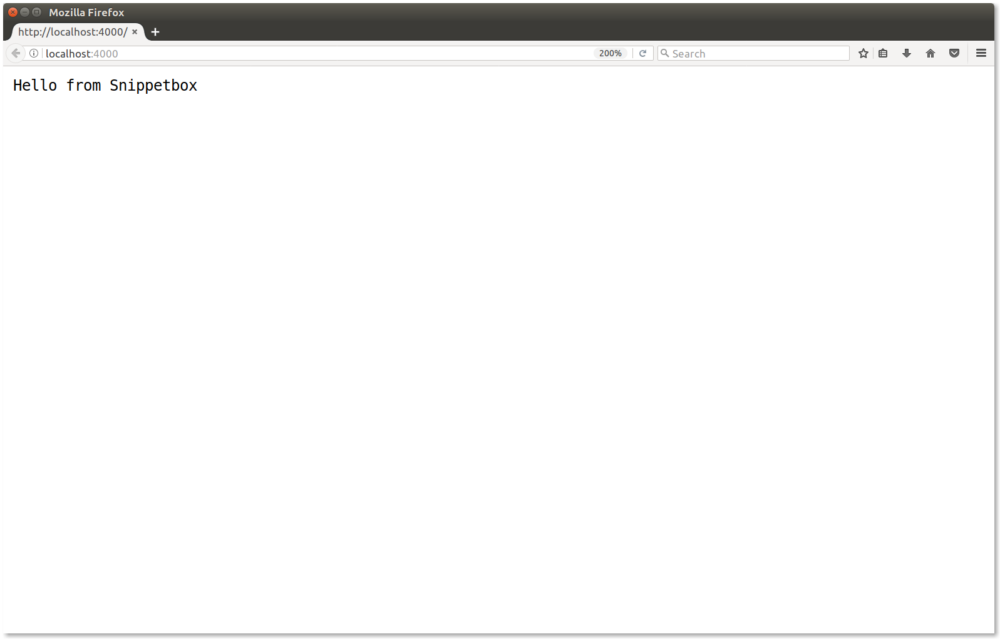

2.2. A Basic Web Application
In this chapter we'll kick off our Snippetbox project and create a super-simple web application with one route, which sends a plain-text "Hello from Snippetbox" response to the user.
There are three main components to making a web application in Go:
The first thing we need is a handler. If you're coming from an MVC-background, you can think of handlers as being a bit like controllers. They're responsible for executing your application logic and for writing HTTP response headers and bodies.
The second component is a router (or serve mux in Go terminology). This stores a mapping between the URL patterns for your application and the corresponding handlers. Usually you have one serve mux for your application containing all of your routes.
The last thing we need is a running web server. One of the great things about Go is that you can establish a web server and listen for incoming requests as part of your application itself. You don't need a third-party server like Nginx or Apache.
Let's put these components together in the main.go file to make a working application.
package main import ( "log" "net/http" ) // Define a Home function which writes a plain-text "Hello from Snippetbox" // message as the HTTP response body. func Home(w http.ResponseWriter, r *http.Request) { w.Write([]byte("Hello from Snippetbox")) } func main() { // Use the http.NewServeMux() function to initialize a new serve mux. Then use // the mux.HandleFunc() method to register our Home function as the handler for // the "/" URL pattern. mux := http.NewServeMux() mux.HandleFunc("/", Home) // Use the http.ListenAndServe() function to start a new web server. We pass in // two parameters: the TCP network address to listen on (in this case ":4000") // and the serve mux we just created. If ListenAndServe() returns an error we // use the log.Fatal() function to record the error message and exit the program. log.Println("Starting server on :4000") err := http.ListenAndServe(":4000", mux) log.Fatal(err) }
When you run this code it should start a web server listening on port 4000 of your local machine. Each time the server receives a new request it will pass the request on to the serve mux and, in turn, the serve mux will check the URL path and dispatch the request to the matching handler – if one exists.
Let's give this a try. Save your main.go file and then try running it from your terminal using the go run command.
$ cd $HOME/go/src/snippetbox.org $ go run main.go 2017/08/16 17:53:11 Starting server on :4000
While the application is running open up a web browser and try visiting http://localhost:4000/. If everything has gone to plan you should see a page which looks a bit like this:

Before we continue, I should explain that Go's serve mux treats the pattern "/" like a catch-all. So when we run this application all requests will be dispatched to our Home handler. For instance, you can visit a different URL path like http://localhost:4000/foo/bar and you should receive exactly the same response. We'll talk more about this in the next chapter.
But before you stop the application, you might want to open a second terminal window and use curl to view the response headers:
$ curl -i http://localhost:4000/
HTTP/1.1 200 OK
Date: Wed, 16 Aug 2017 16:06:59 GMT
Content-Length: 21
Content-Type: text/plain; charset=utf-8
Hello from Snippetbox
Notice how Go has defaulted to sending a 200 OK status code, and has automatically set the correct Date, Content-Length, and Content-Type headers?
If you head back to your original terminal window, you can stop the web application by pressing Ctrl+c on your keyboard.
Notes
Network Addresses
The TCP network address that you pass to http.ListenAndServe() should be in the format "host:port". If you omit the host (like we did with ":4000") then the server will listen on all of your computer's available network interfaces. Generally you only need to specify a host in the address if your computer has multiple network interfaces and you want to listen on just one of them.
Sometimes you might see network addresses written using named ports like ":http" or ":http-alt" instead of a number. If you use a named port then Go will attempt to look up the relevant port number from your /etc/services file when starting the server, and will return an error if a match can't be found.